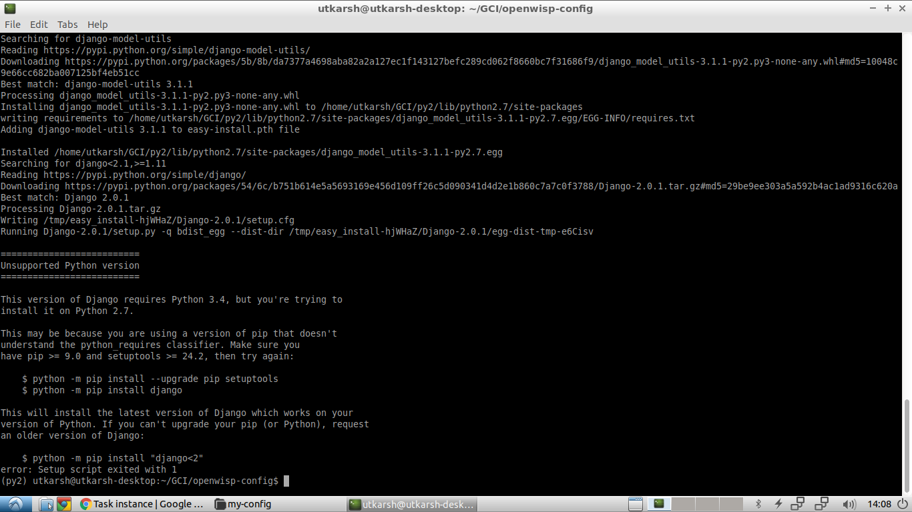
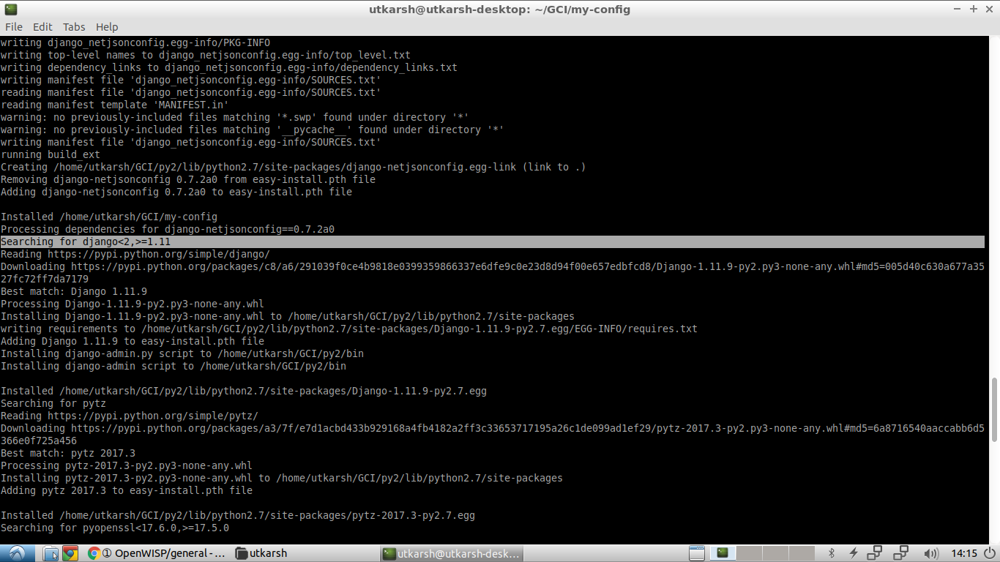
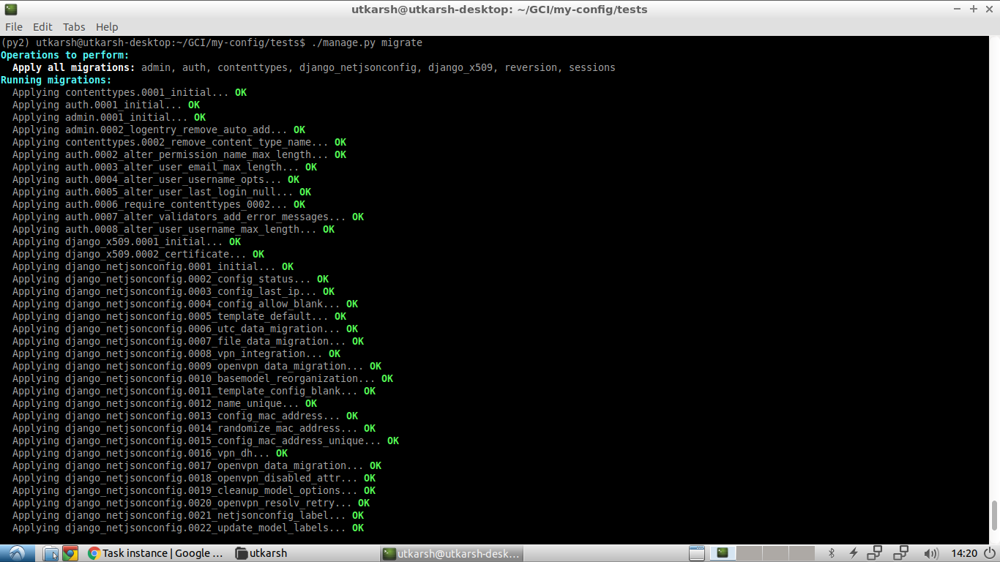
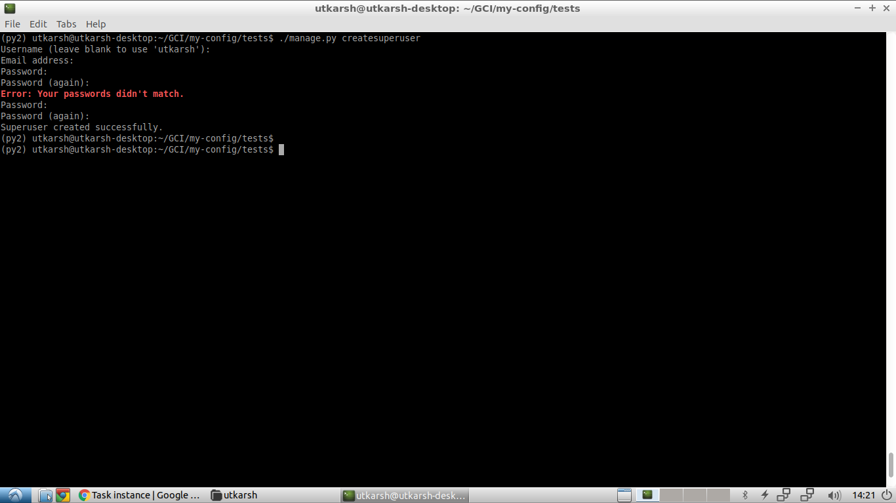

Testing "django-netjsonconfig"
A task came up in Google Code-in which asked me to install the django-netjsonconfig module by OpenWISP. Furthermore, I’m also supposed to share the challenges I faced during the set-up process as a sort of feedback. I’ll be trying be concise in this post so, without further ado, I’m beginning with this post.
Installing “django-netjsonconfig”
The installation instructions for this this module have been well-documented on its
GitHub repository.
So I began the installation by creating a Python 2.7 Virtual Environment using
python2 -m virtualenv py2 for the sake of cleanliness on my local machine. I chose
python2 for since for this since I was also on the lookout for bugs in the module and
most of the bugs seem to be related with it since it’s a bit outdated now.
I then activated the virtualenv and started entering the installation commands
according to the instructions in the repository. Everything went on smoothly until
the python setup.py develop command. I got an error as shown in the below picture.

Clearly, the error suggests that Django v2.0.1 was being downloaded which
isn’t supported by Python 2.7. A bit of browsing led me to the conclusion
that the setup.py needed to be modified to download older Django versions for
Python 2.7. So, I added a simple if-else block to the django installation statement
as shown in the picture.

If you’re curious about my fix, this is the link.
Here, what’s being done is basically:
- Detect
pythonversion used for installation usingsys.version_info[0]. - Install older Django versions if
sys.version_info[0]<3, that ispython2is detected. - Install latest version if above condition isn’t satisfied, that is
python3is detected.
I also had to remove the django installation line from requirements.txt since setup.py
was fetching the requirement names from there. After applying this fix, I re-ran the
python setup.py develop command and there it was! The sweet smell of success. Now
an older yet python2 compatible version of Django was being installed when
using python2 as clearly shown in one of the pictures below:


After this, I installed some more requirements using pip install -r requirements-test.txt
This was how I’d finished installing django-netjsonconfig using Python2. Now all that was
left to do was to to do the migrations and run the server.
Making Migrations and Creating a superuser
By referring to the instructions on the repo again, I opened the tests directory,
did the migrations using ./manage.py migrate. It was really satisfying to see all
the CLI responses coloured in green. 😄

After that, there was the superuser creation using ./manage.py createsuperuser.

Running the Test Server
I started the test server using ./manage.py runserver and it was successful.

I could also now visit the server at http://localhost:8000/admin.
Conclusion
So, that’s how I installed the django-netjsonconfig module. Also, I’ve commited my fixes to my forked repo here. Here’s the link to my pull request. That concludes this post.